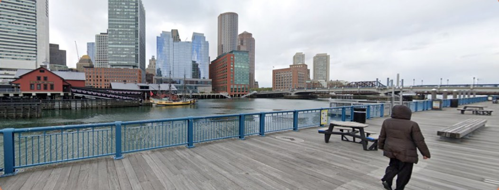
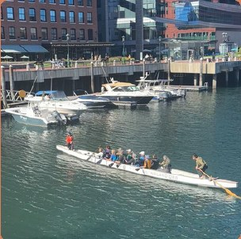
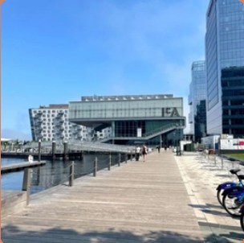
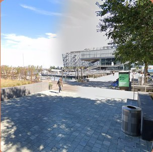
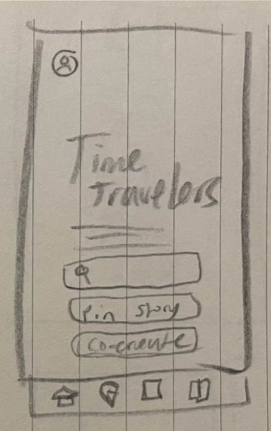
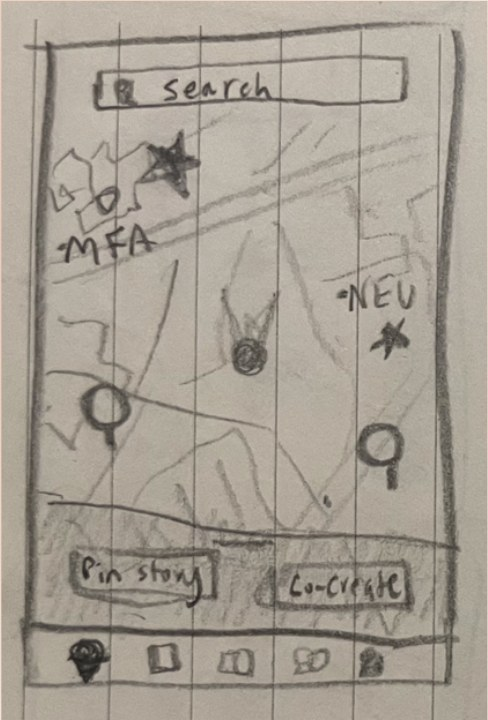
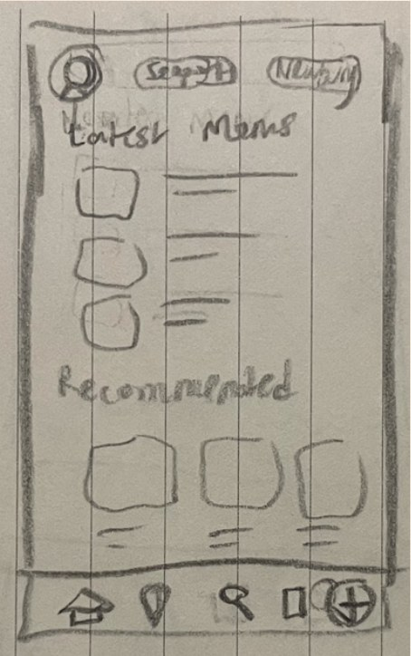
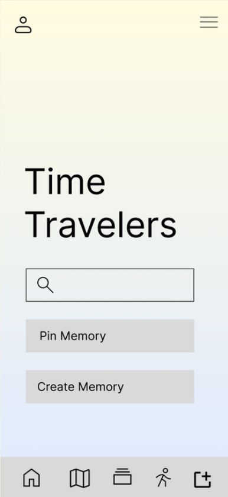
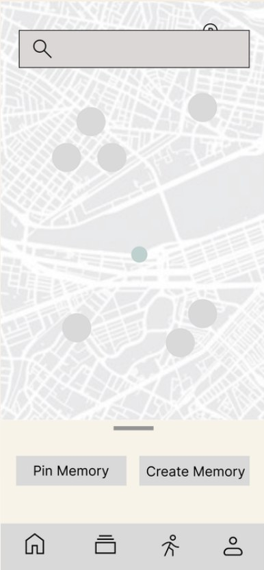
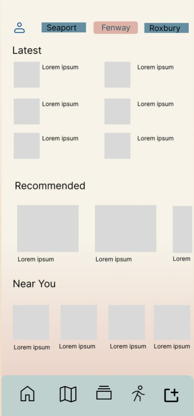

UX Designer & Researcher
Robiya Sahibnazarova, Annika Kim
Mentor: Prof. Sheng-Hung Lee
Fieldwork, interviews, iterative prototyping
Figma, [add others]
The problem
of older adults globally experience loneliness
of East Boston seniors feel lonely every day
of East Boston seniors live alone
In just two decades, the Seaport went from a working-class industrial waterfront to a technology hub. Young professionals now fill the district, mostly unaware of its history, while the elders who helped build it feel like strangers there. They lose more than their social networks. They lose the places that anchored who they are.
How might we create intergenerational connections through place-based storytelling?
Research
Site observations
We spent time on the Seaport boardwalk to see how people actually use it. The space had infrastructure for movement, but not for memory.




- The boardwalk was polished and modern, but built for newcomers and tourists
- Historical markers covered the district's future, not its past
- Elders were there, but the space wasn't designed around them
- Nothing invited people to slow down or connect across generations
Interviews
We interviewed four people, including museum professionals, elders, and local residents, to understand how memories shape the way people connect with each other and with a place. Here's some of what they told us:
“Anthony’s Pier 4 was my favorite restaurant in Seaport back then, but it was shut down, and now there is an apartment complex in its place.”
Anonymous intervieweeWestern Mass resident for ~50 years
“Seaport’s changed a lot over the last 50 years of my time in Boston.”
DianeBoston resident since 1978
“Seaport used to be an industrial district with many textile factories and illegal artists lofts.”
ScottBoston resident since 1987
Three key themes came up:
Memory as social currency
Memories of vanished landmarks carried personal meaning and shared history, but they were going unshared. A memory only has value when it circulates.
Place as memory anchor
Every participant remembered events tied to specific places. In the Seaport, most of those places are gone, and elders felt grateful for the changes but left out of them.
Technology as barrier and opportunity
App navigation felt foreign to many elders, but telephones and televisions didn't. Familiarity isn't a limitation to work around. It's something to build from.
These themes shaped the whole project: a mobile app simple enough for anyone to use, including older adults who are hesitant about technology, and a hands-on installation that makes sharing memories playful and brings generations together in person.
Sketches to wireframes
We started with paper sketches of the three core screens: the home screen, a map of pinned memories, and a feed of the latest stories. Then we turned them into wireframes in Figma.
Paper sketches




